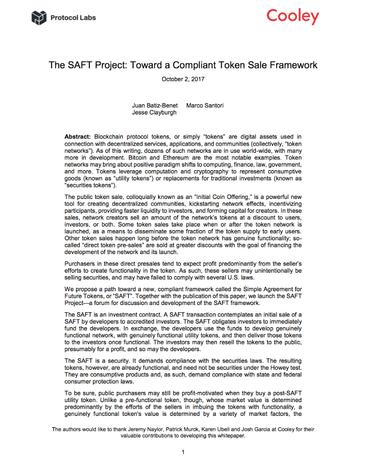
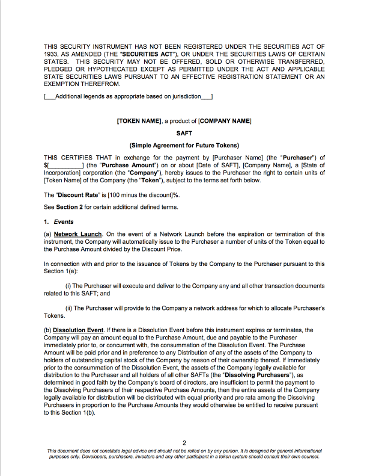

The SAFT Project is a forum for the discussion of a compliant framework for token sales. The goal: To develop an industry standard that protects the interests of network creators, investors, and users.

View Whitepaper
The SAFT Project Whitepaper
Toward a Compliant Token Sale Framework
The Whitepaper:
- Introduces token networks
- Describes the “direct token presales” occurring in the market today
- Explains why those direct presales almost always create securities
- Investigates some of the money services laws and tax risks associated with the direct presale model
- Proposes the SAFT framework, setting forth its benefits and detriments over the direct presale model
- Calls for discussion and development of the framework, including harmonization with international standards

View Forms
The SAFT Forms
Simple Agreement for Future Tokens
The SAFT is the commercial instrument used to convey rights in tokens prior to the development of the tokens’ functionality. In the U.S., the SAFT itself is a security, so it could be offered in a private placement to accredited investors. The tokens that are ultimately delivered to the investors, though, should be fully-functional, and therefore not securities under U.S. law. Outside of the U.S., the need to limit SAFTs or tokens to accredited investors will depend upon the laws of the local jurisdiction.
Community
So far, the thinking in the SAFT Project whitepaper is limited to only a few US laws. To become a global standard, The SAFT Project relies on the international collaboration of network creators, lawyers, policy gurus, investors, and users. Consider this an open call for participation. If you wish to contribute to this important work, please join the project. For now, most discussions have been carried over email and in person. Please reach out by email if you wish to get involved. You can find some outputs of our work on GitHub. We intend to distribute more work there, and make it a larger forum for discussion over time. We may also organize workshop and conference events to gather the community.
- Check us out on GitHub: @saft-project
- Email us: saft-project@protocol.ai
About
Since 2013, hundreds of developers have used token sales to raise start-up funding all over the world. For as long, network creators and prospective investors have labored under a cloud of legal uncertainty. Did those public sales result in unregistered securities? Were the sellers engaging in money transmission? How would the sales be taxed?
During this period, network creators originally situated in the U.S. faced existential challenges that few could navigate. Many chose to rehome their businesses abroad, where they thought they might receive more certain treatment. In some cases they banned U.S. participants altogether.
Multiple independent network creators, investors, and lawyers arrived at the same conclusion: the industry needed a standard, compliant transactional framework to finance token networks. Some industry participants had already begun using an instrument derived from the popular SAFE, but the document had never been researched or analyzed publicly under existing law. Protocol Labs, Cooley, AngelList, and CoinList collaborated extensively to conduct that research and analysis. Thus the SAFT Project began.
We believe the framework set forth in the whitepaper is the best tool currently available for navigating U.S. law. It does more than just find successful legal structures; it seeks to respect the policy goals that drive the law. We think it can do the same for laws all around the world. The SAFT Project is an extensive effort to formalize a framework for compliant token sales, across many jurisdictions. Today, the majority of the work has focused on U.S. regulations and finding a compliant path for fundraising token sales (usually pre-sales before the tokens are useful). We welcome – indeed, the project requires – input from participants around the world.